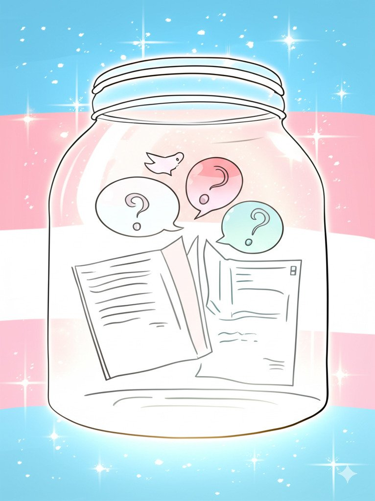

洛铃
@LolingVerse
@TaroLeohearts 推上好多跨或多或少都被精神问题困扰。你遇到过相关问题吗？你是怎么做的。

芋头Leohearts 🔮
@TaroLeohearts
今天是 "跨性别现身日"，是跨性别者们 (跨男，跨女，非二元等) 站在阳光下的日子。
您有没有哪些想要询问跨性别的问题呢？我来办一个 "Ask transgender 101" 好了，您可以随意在评论区询问，虽不一定由我来回答，但收集问题本身就是很有意义的哦 :3 https://t.co/66rhATSuzM